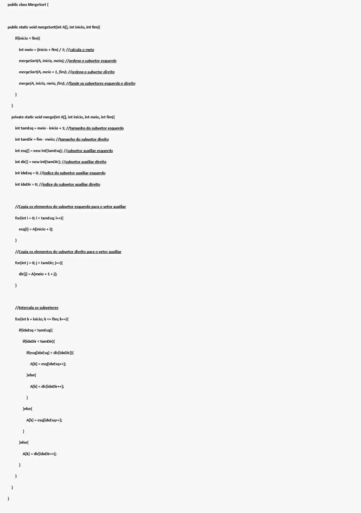

| Representação Gráfica | Animação | Vídeo |
 |
Aluna(s): Anna Ladewig e Lícia Verêda
Funcionamento:
É um método de ordenação do tipo Dividir para Conquistar . Baseada em recursão, ou seja, um método que chama ele mesmo várias vezes.
O tipo Dividir para Conquistar baseia-se em fazer divisão dos dados em subsequência, divide-se o vetor em dois subvetores, cada um com metade dos elementos do vetor original. Esse procedimento é então reaplicado aos dois subvetores recursivamente. Quando os subvetores têm apenas um elemento (caso base), a recursão para.
O objetivo é resolver problemas menores, para posteriormente começar o processo de Conquista. Na conquista ocorre a combinação de todas as pequenas soluções, para obter um conjunto só e totalmente ordenado, resultado da classificação recursiva devido a aplicação do merge sort.
| Representação Gráfica | Animação | Vídeo |
|
Vantagens:
Desvantagens:
Implementação:
Referências: